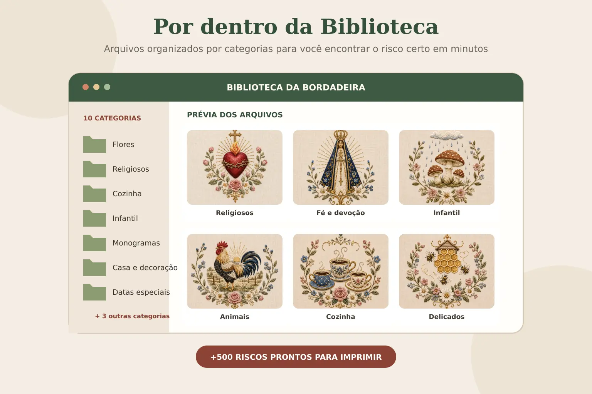
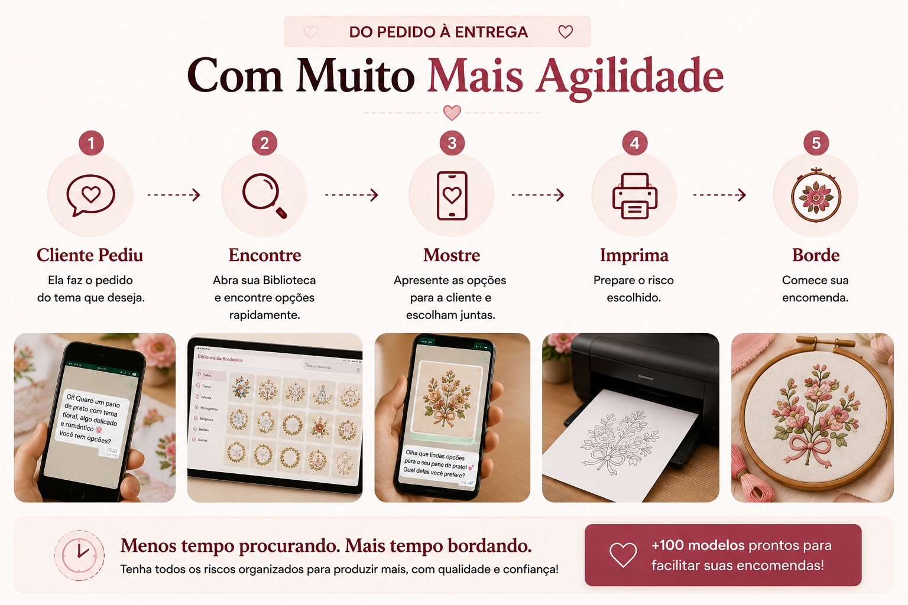
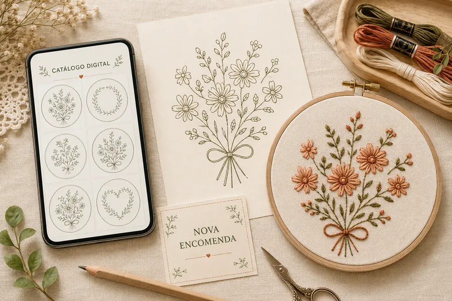

Para bordadeiras que trabalham com encomendas
+500 modelos organizados para não deixar mais uma encomenda escapar por falta do risco certo

Tenha +500 modelos organizados, prontos para imprimir e mostrar às clientes sempre que um novo pedido chegar.
Novo: Videoaulas bônus inclusas
Quero Ter Meus Riscos Sempre à MãoUm risco para cada nova encomenda
Religiosos, flores, cozinha, infantil, monogramas, datas especiais e muito mais.


Prévia do acervo
+500 Riscos para Você Nunca Ficar Sem Opção
Modelos organizados por categorias para você encontrar rapidamente o risco certo para cada cliente e ocasião.
Risco de Bordado
Sagrado Coração de Jesus

Pronto para imprimir e transferir para o tecido ♥
Risco de Bordado
Nossa Senhora Aparecida
Pronto para imprimir e transferir para o tecido ♥
Risco de Bordado
Cogumelos na Chuva
Pronto para imprimir e transferir para o tecido ♥
Risco de Bordado
Galo Carijó ao Amanhecer

Pronto para imprimir e transferir para o tecido ♥
Risco de Bordado
Xícaras de Café

Pronto para imprimir e transferir para o tecido ♥
Risco de Bordado
Colmeia e Abelhinhas
Pronto para imprimir e transferir para o tecido ♥
Risco de Bordado
"Casa Feliz, Panela no Fogo"
Pronto para imprimir e transferir para o tecido ♥
Risco de Bordado
Vasinho de Manjericão
Pronto para imprimir e transferir para o tecido ♥
Risco de Bordado
Peixinhos no Aquário
Pronto para imprimir e transferir para o tecido ♥
Acervo Completo
+500 riscos organizados em 10 categorias
Prontos para Usar
Imprima, transfira e borde com facilidade
Para Todos os Níveis
Você não precisa saber desenhar
Fácil de Encontrar
Organizados para você achar rápido
Crie e Encante
Transforme em peças para presentear ou vender
Mais de 500 Riscos Esperando pela Sua Próxima Peça
Tudo Organizado e Pronto para Usar
Você não recebe arquivos soltos. A Biblioteca é organizada por categorias para encontrar, escolher e imprimir seus riscos com muito mais facilidade.


A Biblioteca Completa reúne +500 riscos organizados em 10 categorias.
Videoaulas Bônus
Aprenda a Usar Seus Riscos na Prática
Além dos +500 riscos, você também recebe videoaulas bônus para aprender a preparar, imprimir e transferir os modelos para o tecido com mais facilidade e segurança.
Presentes especiais
Bônus Exclusivos Inclusos na Sua Biblioteca
Além dos riscos, você recebe materiais extras para agilizar ainda mais suas encomendas.

Videoaulas Bônus
Aprenda a preparar, imprimir e transferir seus riscos para o tecido com mais facilidade.

Catálogo Digital para Clientes
Apresente opções pelo celular e ajude suas clientes a escolherem o modelo da encomenda.

Guia de Transferência para Tecido
Veja diferentes formas de passar o risco para o tecido com mais segurança.

Alfabetos, Nomes e Monogramas
Personalize toalhas, enxovais, bastidores e presentes com letras prontas para bordar.

Frases para Bordar
Frases afetivas prontas para personalizar peças, presentes e encomendas.
Oferta especial
Escolha Como Quer Começar
Tenha seus modelos organizados e pare de começar uma busca do zero toda vez que uma cliente fizer um pedido.
Condição especial por tempo limitado
O acesso promocional encerra em:
Biblioteca Essencial
Para quem quer o acervo principal
- +250 riscos organizados
- 5 categorias
- Arquivos digitais
- Prontos para imprimir
- Acesso imediato
Biblioteca Completa
Para quem quer agilizar ainda mais suas encomendas
- +500 riscos organizados
- 10 categorias
- Prontos para imprimir
- Acesso imediato
- Acesso vitalício: material reenviado sempre que precisar
- Videoaulas bônus com passo a passo prático
- + todos os 5 bônus exclusivos acima
Por apenas R$10 a mais, DOBRE sua Biblioteca
+ todos os bônus exclusivos da Biblioteca Completa
Histórias reais
Quem já Recebeu

 Peça bordada
Peça bordada

 Peça bordada
Peça bordada


 Peça bordada
Peça bordada

 Peça bordada
Peça bordada
 Peça bordada
Peça bordada
7 Dias para Conhecer sem Risco
Acesse o material e veja tudo por dentro. Se perceber que não é para você, solicite seu reembolso dentro do período de garantia.
Tire suas dúvidas
Perguntas Frequentes
Como recebo os modelos?
O acesso é liberado automaticamente no seu e-mail assim que o pagamento é confirmado. É um material 100% digital, sem envio pelos Correios.
Preciso de impressora especial?
Não. Qualquer impressora doméstica em papel comum já é suficiente para imprimir os riscos.
Como funciona a impressão direto no tecido?
A Biblioteca Completa inclui videoaulas bônus com orientações práticas para preparar, imprimir e transferir os riscos para o tecido.
Posso usar os modelos em peças que vendo?
Sim. Você pode vender livremente as peças bordadas que produzir a partir dos riscos, inclusive em encomendas. O que não é permitido é revender ou compartilhar os arquivos digitais: eles são de uso pessoal.
É pagamento único?
Sim, pagamento único, sem mensalidade.
Sua próxima encomenda pode ser mais simples
Tenha Sempre o Risco Certo para Cada Encomenda
Escolha entre 250 ou 500 riscos organizados e pare de perder tempo procurando modelos na internet.
Quero Minha BibliotecaBiblioteca Essencial R$9,90 • Biblioteca Completa R$19,90 (mais escolhida)